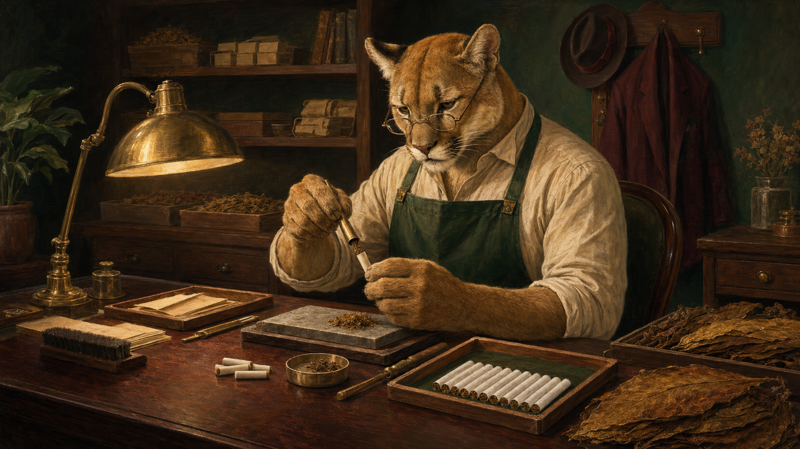

Our Process
Made with Purpose

Every Jazzy Cougar product begins with tobacco grown on small partner farms using pesticide-free cultivation methods. We work only with farms that provide safe working conditions, fair compensation, and transparent labor practices. Our tobacco is harvested by trained adult workers and cured slowly to develop its natural character without rushing the process.
After curing, the leaves are inspected, sorted, and blended in small batches. We avoid unnecessary artificial flavoring and additives, allowing each blend to develop its character through the selected leaves and curing process. Cigarettes and cigars are formed by trained craftspeople, then checked for weight, construction, and consistency before they can carry the prowling-cougar emblem.
Our cigarettes use biodegradable filters, while our boxes, pouches, and wrapping materials are recyclable or compostable whenever practical. Materials that do not meet our production standards are reused where possible or disposed of responsibly. These choices do not make tobacco harmless, but they reduce unnecessary ingredients and waste throughout the process.
Jazzy Cougar remains profitable by keeping its collection focused, producing in controlled quantities, and charging appropriately for premium craftsmanship. We do not attempt to fill every shelf or compete through mass production. Instead, we make fewer products, maintain higher standards, and sell them through our three specialty tobacco shops and lounges.